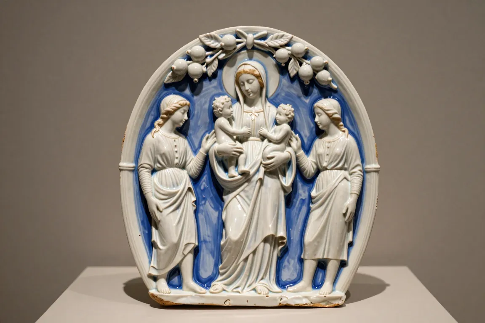

Glazed terracotta reliefs that Luca della Robbia and his family made in Florence. White figures stand on a blue ground inside a frame of painted fruit and leaves.

Core thesis
Sculpture in clay becomes lasting and bright when a white tin glaze covers it, so that a church relief shines and resists rain like marble.
Design principles
Model the figures in clay at full size; cut the relief into parts that fit the kiln.
Cover the figures with a white tin glaze and the ground with a deep blue.
Frame the scene with a wreath of fruit, leaves and flowers in green, yellow and orange.
Keep the flesh and the clothes white, and add a little manganese purple to the eyes, the hair and the hem.
Use one blue for the sky of a lunette or a roundel; leave the glaze thick and even.
Fire the work twice, once bare and once glazed; fit the parts with iron pins and lime mortar.
Place the relief high on a church front or over a door, where rain and sun reach it.
Anti-patterns
Bare red terracotta with no glaze on a church relief